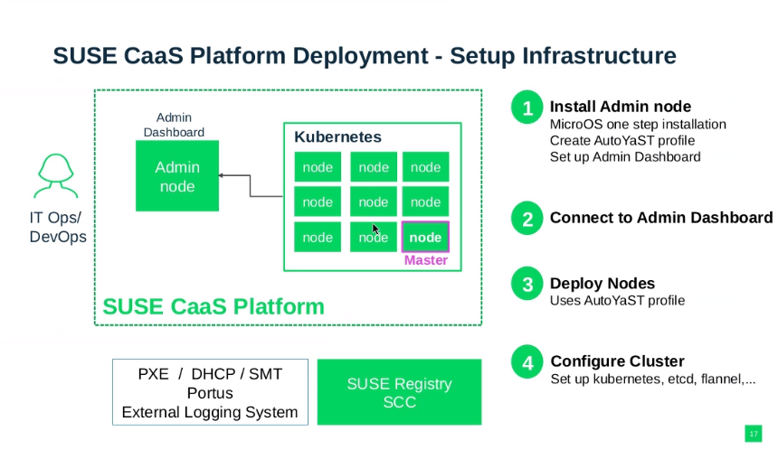

installation kubernetes sur 3 machines avec kubeadm

Verify MAC Address and product_uuid
You can get the MAC address of network interfaces using the command ip link or
ifconfig -a.
The product_uuid can be checked using the command sudo cat /sys/class/dmi/id/product_uuid.
Ping Between Nodes
Verify network filtering (firewall) by running:
nc 127.0.0.1 6443
# or ss -lntp 6443 Install Container Runtime
Note: Docker Engine does not implement the CRI which is a requirement for a container runtime to work with Kubernetes. For that reason, an additional service cri-dockerd has to be installed. cri-dockerd is a project based on the legacy built-in Docker Engine support that was removed from the kubelet in version 1.24. fini 07/2022
Runtime Unix domain socket paths:
- containerd:
unix:///var/run/containerd/containerd.sock - CRI-O:
unix:///var/run/crio/crio.sock - Docker Engine (using cri-dockerd):
unix:///var/run/cri-dockerd.sock
Installing kubeadm, kubelet, and kubectl
You need to install these packages on all of your machines:
kubeadm: Command to bootstrap the cluster.kubelet: Component that runs on all machines and manages pods and containers.kubectl: Command-line utility to interact with the cluster.
Using kubeadm to Create a Cluster
To initialize the control-plane node, run: kubeadm init <args>
Additional Setup Steps
It's recommended to follow these steps before initializing the cluster:
Sur les trois machines
executer ce script sur les trois VMs : attention ! configuration adresse IP privée
# Disable all swap devices, which can improve performance but may also increase the risk of memory shortage.
swapoff -a
# Load the br_netfilter module for bridge filtering.
modprobe br_netfilter
# Load the overlay module required for overlayFS storage, often used with Docker and other containerization tools.
modprobe overlay
#verifier
lsmod | head
# Enable iptables filtering for bridges. This is essential for certain Kubernetes network types.
echo "1" > /proc/sys/net/bridge/bridge-nf-call-iptables
echo "1" > /proc/sys/net/bridge/bridge-nf-call-ip6tables
# Enable IP forwarding to allow packet routing between interfaces.
echo "1" > /proc/sys/net/ipv4/ip_forward
# Update the package list for the apt package manager.
apt-get update
# Install the apt-transport-https and curl tools.
apt-get install -y apt-transport-https curl
# Add the signature key for the opensuse repository for libcontainers.
curl -s https://download.opensuse.org/repositories/devel:/kubic:/libcontainers:/stable/xUbuntu_20.04/Release.key | apt-key add -
# Add the signature key for the opensuse repository for cri-o 1.20.
curl -s https://download.opensuse.org/repositories/devel:/kubic:/libcontainers:/stable:/cri-o:/1.20/xUbuntu_20.04/Release.key | apt-key add -
#verifier
apt-key list
# Add the repository for libcontainers.
apt-add-repository "deb https://download.opensuse.org/repositories/devel:/kubic:/libcontainers:/stable/xUbuntu_20.04 /"
# Add the repository for cri-o 1.20.
apt-add-repository "deb https://download.opensuse.org/repositories/devel:/kubic:/libcontainers:/stable:/cri-o:/1.20/xUbuntu_20.04/ /"
#verifier
cat /etc/apt/sources.list
# Install CRI-O (a Kubernetes runtime) and other related tools.
apt-get install -y cri-o cri-o-runc cri-tools runc
# Start the CRI-O service.
systemctl start crio
#verifier
ss -lntp
# Enable the CRI-O service on startup.
systemctl enable crio
# Add the signature key for the Kubernetes repository.
curl -s https://packages.cloud.google.com/apt/doc/apt-key.gpg | apt-key add -
# Add the Kubernetes repository.
echo "deb https://apt.kubernetes.io/ kubernetes-xenial main" > /etc/apt/sources.list.d/kubernetes.list
# Update the package list.
apt-get update
# Install specific versions of kubectl, kubeadm, and kubelet.
apt-get install -y kubectl=1.20.1-00 kubeadm=1.20.1-00 kubelet=1.20.1-00
# Configure additional arguments for kubelet. $1 represents the IP address you want to use for the node.
echo "KUBELET_EXTRA_ARGS=--node-ip="$1" --cgroup-driver=systemd --container-runtime=remote --container-runtime-endpoint=\"unix:///var/run/crio/crio.sock\"" > /etc/default/kubelet
$1 corresponds to the private IP address of the worker or master interface to be used for the cluster.
Executer ce script sur le master
# Crée (ou écrase si existant) un fichier de configuration pour `kubeadm` qui contient plusieurs paramètres pour initialiser un cluster Kubernetes.
# Vous utilisez le Here Document pour cela. `$1` est censé être l'adresse IP de l'API endpoint.
cat << EOF | tee /etc/kubernetes/kubeadmcfg.yaml
apiVersion: kubeadm.k8s.io/v1beta2
kind: InitConfiguration
localAPIEndpoint:
advertiseAddress: $1
bindPort: 6443
---
apiVersion: kubeadm.k8s.io/v1beta2
kind: ClusterConfiguration
kubernetesVersion: 1.20.1
networking:
podSubnet: "10.244.0.0/16"
serviceSubnet: "10.245.0.0/16"
dnsDomain: "cluster.internal"
---
apiVersion: kubelet.config.k8s.io/v1beta1
kind: KubeletConfiguration
cgroupDriver: systemd
EOF
# Utilise `kubeadm` pour initialiser le cluster Kubernetes en utilisant le fichier de configuration précédemment créé.
# L'option `--upload-certs` est utilisée pour stocker les certificats du cluster dans un secret pour une utilisation avec `join`.
kubeadm init --config /etc/kubernetes/kubeadmcfg.yaml --upload-certs
# Définit la variable d'environnement KUBECONFIG pour utiliser le fichier de configuration admin de Kubernetes.
# Cela informe `kubectl` sur la manière de communiquer avec votre cluster.
export KUBECONFIG=/etc/kubernetes/admin.conf
# Télécharge le manifeste YAML pour Calico, qui est une solution de mise en réseau pour Kubernetes.
curl https://docs.projectcalico.org/v3.8/manifests/calico.yaml -o calico.yaml
# Applique le manifeste Calico, ce qui installe Calico dans le cluster pour la mise en réseau des pods.
kubectl apply -f calico.yaml
# Affiche des informations détaillées sur tous les nœuds du cluster.
kubectl get nodes -o wide
# Ajoute la définition de la variable KUBECONFIG à .bashrc, ce qui fait que chaque nouvelle session shell utilisera le bon fichier de configuration pour `kubectl`.
echo "export KUBECONFIG=/etc/kubernetes/admin.conf" >> .bashrc
$1 correspond à l'adresse IP de l'interface du master qui sera utilisé pour le cluster
root@master8:~# crictl ps
CONTAINER IMAGE CREATED STATE NAME ATTEMPT POD ID
dfe24df96e76c ee86d6374c0e7eab9a6c6499aef64786ee384070a5d2434ce8d4e6e712c59153 2 minutes ago Running calico-node 16 da33e730795a0
406ff95978667 bfe3a36ebd2528b454be6aebece806db5b40407b833e2af9617bf39afaff8c16 About an hour ago Running coredns 0 67d88fa1dbac0
c03abc9ec25b1 bfe3a36ebd2528b454be6aebece806db5b40407b833e2af9617bf39afaff8c16 About an hour ago Running coredns 0 407ad77616a22
3a22abf164c65 f66b238f39802a222e9a0e06580d61f3678ffc9d58da99e4475b492d7dc35c5d About an hour ago Running calico-kube-controllers 0 f6d37cbf57df7
ccc7ca1e268ae e3f6fcd87756eee780767035bc8b0894fb662a0dcf4efcfc607a46d195089f92 About an hour ago Running kube-proxy 0 8af0648138de7
61641811a65dd 75c7f711208082c548b935ab31e681ea30acccdce6b7abeecabae5bbfd326627 About an hour ago Running kube-apiserver 0 edc91bf1f964e
91f350a5b6288 4aa0b4397bbbcc08d662f227e6a880453ff559be8ccf0541422f3d29aad62b0d About an hour ago Running kube-scheduler 0 69d3f319ce24a
2762f7a4e4881 2893d78e47dc3b788c3c94d7115d9e9ed6a32bb1495481b8160f907ba554d903 About an hour ago Running kube-controller-manager 0 5efb70e4b11e2
bff2b73572e07 0369cf4303ffdb467dc219990960a9baa8512a54b0ad9283eaf55bd6c0adb934 About an hour ago Running etcd 0 56896e4c0843d
root@master8:~#
root@master8:~# crictl ps
CONTAINER IMAGE CREATED STATE NAME ATTEMPT POD ID
dfe24df96e76c ee86d6374c0e7eab9a6c6499aef64786ee384070a5d2434ce8d4e6e712c59153 2 minutes ago Running calico-node 16 da33e730795a0
406ff95978667 bfe3a36ebd2528b454be6aebece806db5b40407b833e2af9617bf39afaff8c16 About an hour ago Running coredns 0 67d88fa1dbac0
c03abc9ec25b1 bfe3a36ebd2528b454be6aebece806db5b40407b833e2af9617bf39afaff8c16 About an hour ago Running coredns 0 407ad77616a22
3a22abf164c65 f66b238f39802a222e9a0e06580d61f3678ffc9d58da99e4475b492d7dc35c5d About an hour ago Running calico-kube-controllers 0 f6d37cbf57df7
ccc7ca1e268ae e3f6fcd87756eee780767035bc8b0894fb662a0dcf4efcfc607a46d195089f92 About an hour ago Running kube-proxy 0 8af0648138de7
61641811a65dd 75c7f711208082c548b935ab31e681ea30acccdce6b7abeecabae5bbfd326627 About an hour ago Running kube-apiserver 0 edc91bf1f964e
91f350a5b6288 4aa0b4397bbbcc08d662f227e6a880453ff559be8ccf0541422f3d29aad62b0d About an hour ago Running kube-scheduler 0 69d3f319ce24a
2762f7a4e4881 2893d78e47dc3b788c3c94d7115d9e9ed6a32bb1495481b8160f907ba554d903 About an hour ago Running kube-controller-manager 0 5efb70e4b11e2
bff2b73572e07 0369cf4303ffdb467dc219990960a9baa8512a54b0ad9283eaf55bd6c0adb934 About an hour ago Running etcd 0 56896e4c0843d
Lorsque vous avez exécuté kubeadm init sur votre master, à la fin de son exécution, il a dû vous afficher une commande kubeadm join avec un token et l'adresse IP du master. Cette commande est spécifique à votre cluster.
La commande ressemble généralement à ceci :
NAT sur le master
cat /proc/sys/net/ipv4/ip_forward
iptables -I FORWARD -i eth0 -o eth1 -j ACCEPT
iptables -t nat -I POSTROUTING -o eth1 -j MASQUERADE